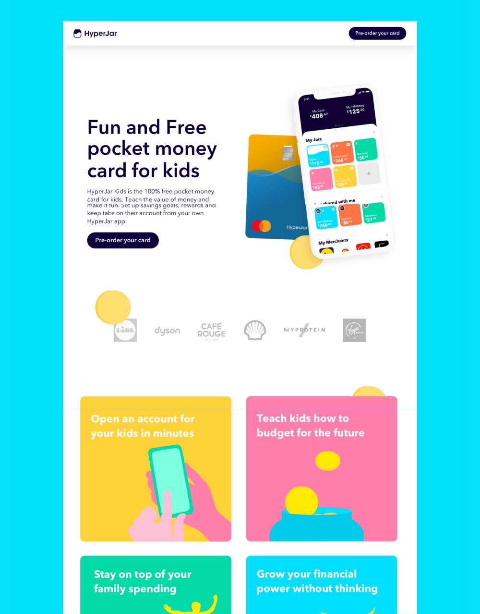

HyperJar Kids Card
Designing a trust-first family fintech experience for parents and kids.

Trust is the first feature in a product for families.
Parents need safety and control; kids need a product they can understand and enjoy. The experience had to make both perspectives visible.
Visible safety and control.
Clear language and confidence before signup.
A product they can actually use.
Coaching, rewards, and an understandable first step.
Design the relationship, not just the card.
The experience was framed around visible controls, plain-language coaching, and a short path to first use.
Understand family trust, safety, and motivation.
Make the shared model clear to parents and kids.
Prototype activation, controls, and coaching.
Build a product people can explain and use.
Make safety and agency visible together.
The product brings parent controls, kid-friendly actions, and rewards into one understandable system.

Trust signals and product coaching work together to support the whole family.
More work across the system.
See the rest of the portfolio, or get in touch about a complex product problem.
Back to selected work